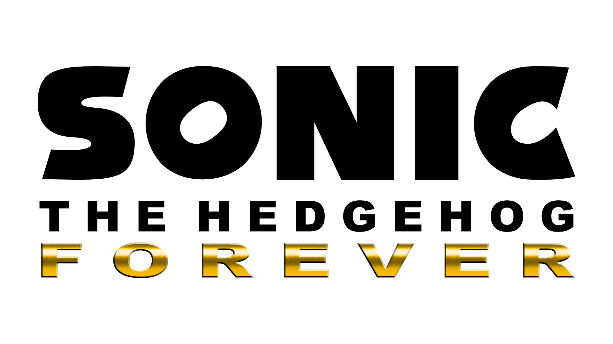

Patch Notes Archive
Release 1.5.2
Character art has been reworked to remove the more "Mania" styled elements
The extended camera behaviour from Sonic CD can be activated in the gameplay menu
Translated menus should now have the correct accents
The options menu has been reworked, making it easier to add your own toggles
Mirror Mode can be activated in the gameplay menu
The Marble Zone proto UFO code has been rewritten entirely to match the pattern in the prototype
The game now uses Discord Rich Presence
Tails' default max dash animation has been set to his animation in Sonic 2
When Tails is in the rolling/jumping animation, his tails position is locked to 45° increments unless Mania rotation is activated
Release 1.5.1
New and Updated Features!
The frame rate of the game can now be toggled between 50 and 60 fps.
A work in Progress French option has been added to the display menu.
The main menu will display in French, but other screens will still be in English until a future update.
The game will now fade in and out similarly to the Mega Drive original.
Quality of Life Improvements
The mod menu will show when a mod is held ready to move.
New mods added to the game will now appear at the top of the mod list, not the bottom.
An option for 16:10 screen ratio has been added to the options menu.
Scrolling in several menus has been reworked.
Option categories can now be navigated with the L and R buttons.
The load function in the special stage maker will move your position to one of the loaded objects, to prevent players from losing their creations.
General Tweaks
The year on the title screen has been updated to 2024.
Explosion sprites have been tweaked.
Gameplay Tweaks
Amy's hammer jump will now have a boosted downwards momentum when used upside down.
The HUD and touch controls for Golf Forever have been refined.
Sound effects in the menus have been given a little more variation.
Arcade Mode will now time over after ten minutes in a level, regardless of time limit setting.
Points are no longer awarded at the end of Scrap Brain Zone act 3.
Arcade Mode is an exception to this, and a full act results screen will play in that mode.
The way the options menu reacts to touch has been changed.
Now touching an option will toggle it to the right regardless of where it is touched.
The data management menu now works on touchscreens.
Bug Fixes
Incorrect goggle positions on certain animations have been corrected.
The player and partner Tails can no longer collect the same ring on the same frame.
A frame in Super Sonic's spinning bounce animation has been aligned correctly.
Adding global objects with game.xml modding will no longer remove existing global objects.
Star Light Zone fans spawned in debug mode now work as expected.
The collision box on closing peppermint blocks in Special Stages have been adjusted to prevent lockouts.
It is no longer possible to load partner Tails in a level with Amy.
Shadows on the Portuguese and Spanish pause menus have been corrected.
Players should no longer turn super again after cancelling the form.
The Green Hill Zone boss will now flash correctly when hit.
The backing graphic in the save select menu has been fixed.
Tails is no longer able to walk through breakable walls when partnered with Knuckles.
The sprites on the water's surface will no longer break on wider screens.
The towers in the foreground of Star Light Zone should no longer pop in on wider screens.
The main menu music will no longer continue into the save select screen.
A patch of incorrect colour on the title screen banner has been fixed.
Mixing XML mods and non-XML mods should no longer crash the game.
Objects can no longer be rendered permanent and undeleteable in the special stage maker.
Text should no longer appear behind section headers in the options menu.
Technical
Sprites can be drawn with all effects.
Object Animations can now use all ink effects.
The objects of the Boss Rush level are now in the scene files as expected.
The music.currentTrack variable will now report as -1 if no music is playing.
Objects typically spawned by the Title Card script are now included in scene files as expected.
Bubble shield bounce code has been tweaked.
Invisible blocks that interact with Knuckles' climb up state now appear correctly in debug mode.
The HUD in debug mode can now be expanded by pressing X.
The global palette is now loaded on all level loads.
The multiple languages all now use one sprite sheet for the pause menu.
Two new functions have been added: SetClassicFade() and ClassicTint().
Release 1.5.0
New and Updated Features!
Amy Rose has been added as a new character, choose between a brand new Forever moveset or an Advance-esque moveset.
Golf Forever has been added to the Game Modes Menu.
Max dash animations can now be toggled on individual characters, with new animations on Tails and Knuckles.
Translations have been added.
Choose between Portuguese or Spanish.
VSync can now be toggled within the game.
New scaling mode options have been added.
Choose between Nearest, Integer, Sharp Bilinear or Bilinear.
A new Data Management page in Options has been added.
The Main Menu and Save Select menu have been overhauled.
The Mania rotation option now rotates characters in the same way as Sonic Mania.
More achievements have been added.
Quality of Life Improvements
Drop shadows have been added behind the Time Attack Portraits for better visibility.
The extras emerald icon colour is now randomly chosen, based on the seven chaos emeralds.
Playing the game with infinite lives now removes the lives part of the HUD.
Playing the game with infinite lives now replaces extra life monitors with ring monitors.
The Roller badnik now has drop dash dust.
Characters' rotation behaviour is now controlled by script, meaning only one animation file is needed per character.
Palettes have been adjusted to make modding easier.
The arcade mode icon now changes based on the green hill watercolour toggle.
Motobug has some restored exhaust frames.
Robotnik's appearance on the Main Menu is once again animated.
Tails' drowning animation has been changed.
A super button will now pop up in the top right corner, ala Sonic Mania.
General Tweaks
Sonic & Super Sonic’s sprites have been tweaked to be more consistent.
Knuckles’ sprites have been overhauled to be more like the original S3 sprites.
Some Main Menu and Arcade sprites have been tweaked.
A black border has been added to monitor icons outside of monitors.
The achievement icons have been redone.
Scrap Brain and Green Hill’s palette cyclings have been made more accurate to the original game.
Marble Zone's background tiling has been fixed.
The “Forever” water in Green Hill has been altered slightly.
The Game Modes icon has been redone.
Time attack menu now uses the normal life icons.
Emeralds within special stages have had their animations polished.
Gameplay Tweaks
Characters now get 60 frames of invulnerability after losing an invincibility power-up or a super form.
Players are able to move if they are caught charging a spindash in midair.
Knuckles glide slide jump/spindash from Sonic 3 has been restored.
Spindashing next to a pushable block will now push the block.
Bug Fixes
The “VSync” option now correctly caps the frame rate at 60fps.
Partner Tails can no longer kill Badniks with his tails.
OpenGL and the glew32.dll have been removed.
There is no longer a cooldown on toggles in the “Display” options.
Upon release, the Drop Dash properly cancels the charge sound effect.
A mod menu bug that causes the game to lock up has been fixed.
The Yellow Emerald in the ending and credits now displays correctly.
It is no longer possible to enter the Junction Wheel in Scrap Brain Zone from the bottom.
Knuckles' underwater palette has been fixed.
The code for Labyrinth's current tunnel object has been reworked to restore the player dragging behaviour without the soft lock.
A clipping bug in Spring Yard Zone has been corrected.
A bug with Tails' palette in demos has been fixed.
The doors in Scrap Brain Zone no longer peek above the terrain.
The star sprite used in the Extras menu to mark completion has been fixed.
Points monitors now appear correctly in Arcade Mode regardless of infinite lives option.
The Marble Zone falling blocks now work as intended.
A monitor collision bug has been fixed.
HOTFIX
Translations: A Portuguese word in the special stage pause menu was realigned.
Unfinished language options have been correctly locked off in mobile.
An issue with the no save button on certain languages has been fixed.
The description for the Death Chamber achievement in Portuguese has been corrected.
Touch Controls
A touch cheat on the SEGA screen has been corrected.
The touch controls in level select have been clarified.
The touch controls on the main menu have been overhauled.
A back button was added to the touch controls in save select.
Touch controls have been added to the Golf menu.
Touch controls in the Mod Menu have been changed, allowing users to change mod priorities.
The title sequence should no longer bug out when holding a finger on it.
Some touch control graphics have been changed.
The No Save button has had touch controls implemented.
It is now possible to skip the credits with touch.
The Sega screen can now be skipped with touch controls.
The super button and pause button on touch controls now appear and disappear when appropriate.
Saves from the official mobile app will no longer render the touch screen controls inaccurate.
Characters
Amy's hammer jump will no longer leave the goggles behind.
Characters will no longer transform into Amy in certain situations.
A bug with Super Sonic's smooth rotation was fixed.
The speed required to trigger Super Sonic's max dash animation has been increased.
Display
The main menu ribbon should no longer hide other menus on wider displays.
Special Stages will no longer get brighter on restart.
A temporary South Island background has been added to prevent graphics glitching on the Main Menu.
Some save select graphics have been tweaked.
Debug numbers that were displayed in the Mod Menu have been removed.
The wings on the save menu have been correctly aligned.
Menu spritesheets have been condensed where necessary.
Technical
The music buffer has been increased from 2MB to 32MB (requires APK update).
An option to reset options to default has been added to data management.
The achievement Get to the Points is now awarded correctly.
Extra lives for 50000 will no longer be disabled on completed saves.
The score display will now function correctly on scores of seven digits.
The Score records in the Arcade Mode menu will now work correctly with scores of seven digits.
Skipping the credits during a demo part now works as intended.
Release 1.4.2
New and Updated Features!
The colour of the water in Green Hill Zone can now be toggled between three options.
A new Graphics Mode toggle has been added to “Display” options, allowing you to choose between Hardware, Emulated or Mobile colours.
A Music volume toggle and SoundFX volume toggle have been added to “Sound” options.
A new Screen Size toggle has been added to the options.
A new random monitor toggle has been added to the “Gameplay” options.
The perfect bonus has been added to arcade mode.
The Marble UFOs are now available in Mobile and Proto flavours.
Super Sonic now has a new Peelout animation when “CD Peelout” is selected.
Quality of Life Improvements
An icon has been added to locked extras.
Fadeouts on level completion have been sped up.
The drop dash now produces unique dust sprites.
The description for the Chaos Connoisseur achievement has been changed to specify 6 emeralds.
The position of the HUD has been changed to be in line with Sonic 1 (1991).
An extra frame has been to Knuckles glide animation.
General Tweaks
A lot of graphics have been redone and tweaked.
The exe has been updated to 1.3, with Forever specific amendments.
The background elements have been restored to the extras menu.
The touch screen joypad should no longer show on mobile.
The graphic from a broken monitor is now always visible.
Super Sonic's Drop Dash Release is now “Peelout Release” instead of “Thud”.
Gameplay Tweaks
Knuckles glide has been made more accurate to Sonic 3 and Knuckles, restoring the “Superglide” ability.
Using the insta shield a few frames before getting an invincibility power-up will no longer cancel it off.
The Peelout has been made more accurate to Sonic CD.
Bug Fixes
The DLLs for Microsoft Visual C++ Redistributable are now included.
The underwater palettes have had colours missing from the global palette added.
Tails' flying hitbox has been repaired, fixing jerking problems in certain places.
The ending should now display the text “Sonic the Hedgehog Forever” regardless of which character completes the game.
A number of levels have had tweaks to their tile collision.
The layering of Labyrinth Zone waterfalls has been reworked to always be above the player.
Crouching under the crushers in Marble Zone will no longer make you invulnerable to them.
The pistons in Sky Base's last boss are now capable of crushing the player against the ceiling.
Tails' Super Flickies will now be affected by the water palette.
And many more…
Release 1.4.1
New and Updated Features
The setup will now check for a data.rsdk file, and use that for assets if it finds one.
An option has been added to toggle the Special Stages between original and smooth rotation.
A cheat has been added to the sound test.
Quality of Life Improvements
Collected chaos emeralds are now displayed on the pause menu.
Time Over has been removed from the game.
Sonic can now use the Instashield while wearing a pair of goggles.
Returning to the main menu from an extra will send you to the extras submenu.
General Tweaks
Emerald Gauntlet now records a completion time.
The portrait sprites on the Arcade and Time Attack menus have been tweaked.
The mountains in Green Hill Zone have been tweaked.
The characters are a little animated in Save Select.
The third emerald no longer changes colour in reaction to emerald count settings.
Gameplay Tweaks
The orbinaut in Boss rush was moved right ten pixels.
Bug Fixes
The pause menu code has been reworked, so players no longer appear above all other graphical assets when the game is paused.
The kerning on the Staff Credits has been corrected.
A loop switch in Boss Rush was moved to prevent characters becoming trapped in the floor.
The last boss of Boss Rush can now kill you with his pistons.
Continues are no longer awarded when Infinite Lives is active.
The seesaws in the Star Light Zone boss no longer defuse bombs when stood on in just the right spot.
Finishing Labyrinth Zone act 1 “somewhere else” will now award your ring bonus properly.
A draw order issue with an object in Labyrinth Zone was fixed.
The following sound effects now resume correctly when unpausing: Flying, Tired, DrownWarn.
Release 1.4.0
New and Updated Features
Obtaining the achievement “One for the Road” will unlock Boss Rush in the extras menu.
A splash screen has been added to reflect S1F's participation in SHC 2021.
Holding the Down button for three seconds on the Sega screen will give you access to a screen where you can test your controller inputs.
Pressing the Up button five times on the Sega screen will now copy across any saves from the base decompilation.
Quality of Life Improvements
The Flight Assist ability has been made much more responsive.
Attacking bosses with Sonic's insta-shield now works as expected.
General Tweaks
The options menu has been rearranged.
Flashes during gameplay have been toned down, and the option to disable them has been removed.
Menu artwork has been tweaked.
The title screen has been made shinier.
Some of the blocks in the Labyrinth have been vandalised.
A tiling error was fixed in Green Hill Zone.
Tails' debug ring teleport has been removed.
Gameplay Tweaks
A toggle for Infinite Lives has been added to the options menu.
The hitboxes of several bosses have been revised.
An option has been added for the physics used by the Bubble Shield.
Labyrinth Zone tile collision has been tweaked.
Some targeting code has been rewritten.
Bug Fixes
Waiting for the Time Attack results to appear specifically so you can then jump off the end of Final Zone will no longer work.
The way the engine plays music has been reworked to avoid crashes.
Bombs in the Star Light Zone boss fight will no longer become inactive.
Controls in the achievement menu have been tweaked to avoid softlocks.
Knuckles' waiting animation has been fully restored.
Emerald Gauntlet now saves progress made on Ring Chain.
Release 1.3.4
The exe used to run the game has been rebased.
A slope in Spring Yard Zone Act 3 has had its collision tweaked.
A bug was fixed with Sonic's instashield deflecting projectiles.
Extra babysitting has been added to prevent all but the most determined players throwing themselves from the ledge in Final Zone.
Fast Act Music is now an available choice for Super Music in the Options menu.
HOTFIX
The game will no longer pause when the window is unfocused.
The graphics in the Time Attack special stage results screen are no longer corrupted.
Release 1.3.3
New and Updated Features!
Arcade Mode has been added to the Game Modes Menu.
Emerald Gauntlet has been added to the Extras Menu.
The game now tracks the players ring chain through all game modes.
Quality of Life Improvements
One way doors in Scrap Brain Zone will no longer stop faster players.
The cutscene at the end of Scrap Brain Zone act 2 will trigger from further away.
The time insta-shield effects are active has been extended to match Sonic 3.
Entering the Special Stage Maker will now load your saved layout automatically.
Invincibility Type is now a separate toggle from Shield Type.
The Shield Type option has been made a lot clearer.
General Tweaks
Tails' sprites and animations have been tweaked.
Sonic's animations have been tweaked.
The extras menu has had a small redesign.
Gameplay Tweaks
The bubble shield bounce more accurately reflects the behaviour in Sonic Mania.
Sonic can now use the fire shield to get through breakable walls.
Bug Fixes
Impatient players can no longer rush to their deaths at the end of Scrap Brain Zone act 2 and Final Zone.
Extra lives can no longer be awarded during the credits for scoring points.
The conveyor wheels in Scrap Brain Zone have had their testing sound effects disabled.
A newtron in Green Hill Zone act 3 no longer falls through the floor when spawning.
Four duplicate rings have been removed.
The engine will no longer lose inputs on certain frames.
A layering issue in Spring Yard Zone has been fixed.
Debug Tools
Pressing Y as Tails in debug mode will teleport him to the nearest ring, remove his physics and give him 10 seconds of invincibility.
Release 1.2.1
Scrap Brain Zone act 3 and Final Zone will no longer save times after the stage has been reset.
The demo special stage now loads the correct palette.
The player should no longer be able to lock the game by pausing on the frame they drown.
The bridge at the end of Scrap Brain Zone act 2 now uses a priority that will prevent impatient players falling through it.
Once a player hits the ground in Scrap Brain Zone act 3, they have 200 frames before the way above them becomes blocked.
A sound effect will play to confirm this.
The shoe icon in the Main Menu is now animated.
The collision ID of the glass pillars in Marble Zone has been changed to prevent floor clips.
The time limit for stages has been set for thirty minutes.
Players should no longer be able to soar over the signpost without activating it in certain Time Attack levels.
Player animations have been slightly tweaked.
Pressing A and B simultaneously no longer locks the Time Attack Menu.
Version number has been added to the Time Attack menu.
Release 1.2.0
New and Updated Features!
Time Attack is now accessible through the menu.
Three new achievements have been added.
Mania rotation can now be turned on in the tweaks menu.
An option for CD spindash has been added.
The invincibility music from Sonic 1 has been added as an option for super music.
The level select has been replaced to be more faithful to the original Mega Drive / Genesis version.
Demos now load a character at random, instead of always being Sonic.
Selecting a completed save file now allows you to choose a zone from within the save select menu.
A secret unlockable has been added to the game.
A cheat has also been added to the title screen.
Quality of Life Improvements
Pause menus have been tweaked, including separate buttons for restarting the level and returning to a checkpoint.
There is now an HUD in special stages showing how many rings the player has collected.
Pressing start during the credits will now end them.
Gameplay Tweaks
Knuckles' behaviour on dropping from a glide has been made more consistent with Sonic 3 & Knuckles.
Starting position in special stage 3 has been slightly altered.
Two particularly unfair orbinauts have been removed.
General Tweaks
Lives and Continues are now capped at 99.
Ring and time bonus are now awarded after Scrap Brain Zone Act 3.
The criteria for the achievement “Beating the Clock” has been adjusted.
The layout of achievements in the menu has been rearranged.
The default settings file now sets volume at 40% and screen width at 426.
When the game cannot find a settings.ini file, it will now generate one appropriate for Sonic Forever.
Touch controls have been removed from all parts of the game except the Sega splash screen.
Labyrinth Zone water palette has been updated.
The icon for Chaos Connoisseur has been changed to better reflect the achievement's requirements.
Bug Fixes
A bug that could hard-lock the game if paused on certain frames has been fixed.
Knuckles should no longer be able to get inside walls by gliding into steep slopes.
Jump heights have been reverted back to their intended values.
A graphical error has been fixed in the options menu.
Earning an achievement while a previous achievement is still displayed will cause it to be queued.
A piece of Spring Yard Zone has had its collision tweaked.
Pressing left or right on the main menu will no longer make sounds in places where it doesn't do anything.
Player can no longer pause during a death.
Sonic can no longer be stuck charging a drop dash at the end of the game.
The capsule (animal prison) can no longer be warped through by spindashing.
Knuckles can now reliably attach himself to a wall he's pressed against.
It is now impossible to escape the screen boundary after hitting a signpost.
Tails will no longer vibrate trying to fly through a ceiling.
Tails' Flying tired sound effect will now stop when hitting the water.
Release 1.1.3
Main menu and save select scripts have been altered to prevent crashes.
Changes made to exe code for stability.
Getting an elemental shield during a drop dash charge now behaves the same as Mania.
A graphical bug with the Marble Zone boss has been fixed.
The pause menu no longer gets disabled randomly during play.
Some player sprites have been reworked.
Release 1.1.2
Bubble bouncing on the animal prison no longer forces spam bouncing.
Fixed issue with the Extras menu hogging resources. Eggman begins running as soon as he's out of the Final Zone boss.
Players no longer appear in front of the lava in the Marble Zone boss fight.
Super Characters can't get stuck on spikes during a tunnel section in Labyrinth Zone act 3.
Sonic's skidding animation no longer includes Peel Out frames. Finishing a seven emerald game with six emeralds now plays the correct stinger after the credits. It is now very difficult to leap to your death at the very end of Final Zone.
Replaying a game that was finished with the six emeralds option, but with the seven emeralds option, now sends you to the right Special Stage.
The Emerald on the extras menu is now animated. Pause Menu transitions onto the screen more smoothly. Underwater palettes have been tweaked.
The game can not be paused on the continue screen.
Sprites and level tiles throughout the game have been tweaked. Menu and Save Select music replaced with original tracks.
System text font has been changed to match the original Sonic 1 font. The row of springs in Spring Yard Zone act 2 all bug out correctly.
Fixed a collision issue with landing the drop dash.
Mod list can now be accessed from the main menu.
Setup script will now create a mod directory if one is not already present.
Sonic's Insta-Shield will now deflect certain projectiles.
Scrap Brain Zone Act 3 now has a unique icon on the save select.
Alternative animations for Sonic's top speed/peel out are available in the tweaks menu.
The pillars in the Green Hill Zone act 2 crossing have been given collision to prevent cheap pit deaths.
In Green Hill Zone, Eggman is now vulnerable from the moment he appears. Time Over has been removed from the game.